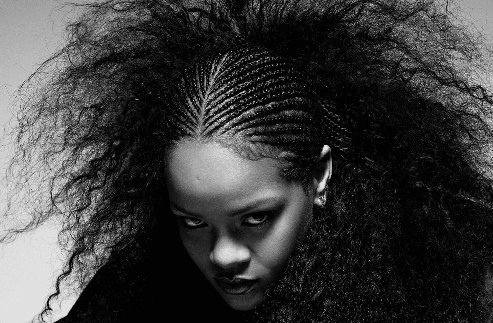

Robyn Rihanna Fenty - ou apenas Rihanna - é uma cantora, compositora, atriz e empresária nascida em Barbados.
Linha do tempo
1988: Nasceu, em 20 de Fevereiro.
2003: Realizou teste com o produtor Evan Rogers.
2004: Audição com o rapper e diretor executivo da Def Jam, Jay-Z.
2005: Assinou contrato com a DefJam Lançou o seu primeiro álbum, Music of The Sun.
2006: Lançou o segundo álbum, A Girl Like Me.
2007: Adotou nova sonoridade musical Lançou o terceiro álbum, Good Girl Gone Bad Entrou em sua primeira turnê, Good Girl Gone Bad Tour.
2008: Ganhou o seu primeiro Grammy com Umbrella em Melhor Colaboração Rap com participação do Jay-Z Lançou o primeiro álbum ao vivo, Good Girl Gone Bad Live Se apresentou na turnê Glow in the Dark Tour com outros artistas Lançou o Good Girl Gone Bad: Reloaded, reedição do terceiro álbum com faixas adicionais.
2009: Lançou o quarto álbum, Rated R Entrou na segunda turnê, Last Girl on Earth Tour.
2010: Sua carreira passou a ser gerenciada também pela Roc Nation Lançou seu quinto álbum, Loud.
2011: Entrou na terceira turnê, Loud Tour Lançou o sexto álbum, Talk That Talk.
2012: Lançou o sétimo álbum, Unapologetic Entrou na quarta turnê, 777 Tour.
2013: Entrou na quinta turnê, Diamonds World Tour.
2014: Entrou em turnê conjunta com o rapper Eminem, The Monster Tour Deixou a DefJam e integrou totalmente a RocNation.
2015: Lançou os singles avulsos FourFiveSeconds (com participação de Kanye West e Paul McCartney), American Oxygen e Bitch Better Have My Money.
2016: Lançou o oitavo álbum, ANTI Entrou na sexta turnê, Anti World Tour.
Outras músicas em que participou
2008: TI: Live Your Life Maroon 5: If I Never See Your Face Again Stand Up to Cancer: Just Stand Up.
2009: Jay-Z: Run This Town.
2010: Eminem: Love The Way You Lie Kanye West: All of the Lights Nicki Minaj: Fly David Guetta: Who's That Chick.
2012: Drake: Take Care Coldplay: Princess of China.
2013: Wale: Bad Remix. Eminem: The Monster.
2014: Shakira: Can't Remember to Forget You.
2015: Home: Original Motion Picture Soundtrack.
2016: Drake: Too Good Mike Will Made It: Nothing Is Promised Kanye West: Famous Calvin Harris: This Is What You Came For.